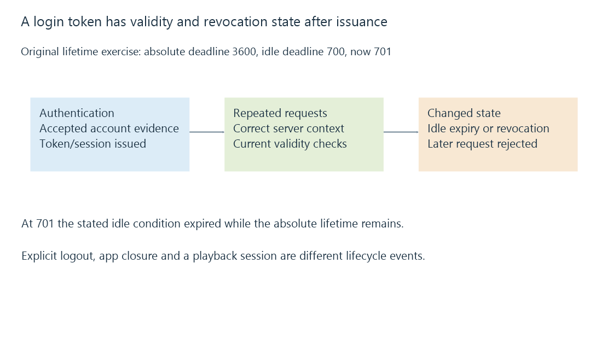

Login sessions, tokens and revocation
A login session retains accepted account evidence for subsequent requests, with token scope, validity and revocation separate from application-window or playback-session state.
A signed-in app can make many requests without resending the password each time. The session/token mechanism retains accepted evidence according to the server’s protocol and policy.
Closing the app and ending that evidence are different events.
An access token belongs to the intended server
Emby’s developer documentation describes returning an access token after successful authentication and using it on subsequent HTTP requests.
It also describes storing the token with the server ID. An equal account name on another server does not make that token appropriate there.
An illustrative token label such as T1 in a model is not a usable credential. Actual token contents should be treated as authentication material.

Session validity can include several conditions
Use an original policy projection:
{
"issuedAtSeconds": 0,
"absoluteLifetimeSeconds": 3600,
"lastActivitySeconds": 100,
"idleLifetimeSeconds": 600,
"nowSeconds": 701,
"revoked": false
}
The absolute deadline is 3600. The idle deadline is 700. At the stated observation time 701, the idle condition has expired even though the absolute one has not.
These durations are invented. They do not claim Emby uses a one-hour or ten-minute default. NIST’s session guidance supplies the broader distinction between session conditions and the proof that originally established them.
A protocol can instead retain revocable tokens under another lifetime design.
Explicit logout and process exit differ
Emby’s documented logout operation revokes the applicable access token. The documentation distinguishes that from closing the app and retaining the token for later use.
A process/window exit can therefore leave server-side accepted evidence intact. An app reopened later still needs the server’s current validity result rather than assuming its saved token is permanently accepted.
A password or policy change has its defined server behavior too. The application should not invent one universal revocation rule from the UI action’s name.
A rejected token can arrive over a valid connection
An HTTPS connection can be valid while a later request receives an authentication rejection because its token is invalid or revoked.
The transport result and session result are independently meaningful. Repeatedly changing a certificate would not repair an actually rejected token.
The documented protocol identifies a 401 response as a context for returning to the authentication flow.
A playback session is another object
An active player can have media position, stream state and remote-control information. Those are not the same thing as the login evidence authorizing its requests.
Several playback operations can use one accepted user session, and a client can retain login evidence while no video is playing.
Authorization also remains current for each requested operation. Session persistence identifies the account relationship; it does not turn one earlier successful play into permission for every later resource.
See Also
- Media server authentication and credential evidence
- Server user identity and scoped account state
- Media server authorization and operation-specific access
- HTTPS and TLS: transport protection and peer identity